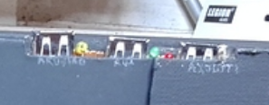
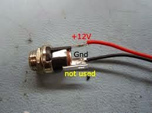

"Any supply between 7V and 15V is fine" - this refers to the power supply input on the Axoloti only.
If you want to power the Axoloti via the Micro USB, then it needs to be a 5v USB device, 5v is the standard for USB.
Power Supply for stand alone use
Gavin
#61
brainsalt
#62
Thanks for this Gavin,
Does it matter what the available Amperage is in this case? Sorry, I'm a bit of a rookie when it comes to power supply.
Gavin
#63
If your not powering anything, then low amps (maybe 250mA) on the USB micro input are more than sufficient. But it depends on what you have connected to the GPIO's and USB host etc that may increase the need for more amps..
brainsalt
#64
Thanks again Gavin,
I won't be powering anything from the Core's USB port and I'll only be using MIDI in (5-pin) and stereo audio out via the 1/4" TRS output, so I imagine I won't need much Amperage. It looks like my chargers offer 2A at 5.2V anyway, so that should be more than enough by the sounds of it.
chrisj
#65
I've just confirmed that a Moog Mother32 wallwart powers the Axoloti quite well. It connects, it's center-positive, and it's rated for 12V/1200mA. Same one as for the Moog DFAM. The cable is over six feet long.
These are 'MEGA Electronics' FJ-SW1201200N, might be gettable separately or wholesale. Pretty cool regardless, though, since people often put Moog eurostuff in euroracks, which leaves the wallwart unused… and an Axoloti can be a VERY powerful addition to a Eurorack setup. So if you have that, you already have the wallwart for using the Axo separate from a computer and USB power. You just need a lot of euro jacks to wire in, and a microSD card to store your patches. 
nachtaktiv
#66
{kind=link}
so, according to the previous posts, this plug should not fry my axoloti? can anyone confirm that?
thanks!
InvisibleMan
#67
Let’s keep this choo choo moving.
How about powering axo from a barrel jack when you’ve removed the midi board? The J pads indicate 5v and ground; is it as a simple as wiring those to a power jack?
Gavin
#68
What you need is a regulated 5V power supply, I don't think it would be safe powering via the J pads, but others may have a different opinion. The Axoloti power input jack goes to a 5v regulator, that's why something like 15v works, but if you are not going into a 5v regulator then you have no way of ensuring a regulated 5v supply and this can cause damage.
Have you considered powering the Axoloti via the Micro USB input, this is a very simple solution, you can use any 5v USB mobile phone power supply, and with this option you can even power the Axoloti with a 5v battery pack. And if you are willing to hack into USB cables etc, this can open up even more options..
InvisibleMan
#69
Many thanks—this helps. Yes, that’s pretty doable. Only trick is that I’m trying to mount power to an enclosure chassis—not to the board—but oh well.
Gavin
#70
Mounting a USB connection to a chassis is very doable as well. This is what I did, I wired a micro usb cable to a standard USB connector mounted to a bread board and mounted to the unit.
The one on the far right is connected to the Axoloti, the one on the middle is connected to the extra Axo USB I/O for midi USB etc, and the one on the far left is connected to an Arduino due.

There is wiring on the inside that will power the Arduino Due and another board when switched on, The Arduino due USB connection is for when uploading sketches which isn't always needed.
There are 4 wires, 5v, GND, TX, RX.
If TX and RX is disconnected, only power goes through the usb to power your device, with TX and RX connected, well you can load your patches etc..
Important to note, if you intend to have multiple USB connections like I have, make sure that they are isolated from one another if you intend to use separate power supplies. But if it is all coming from the same supply, no issues..
szlothd
#71
Hello !
I would like to power the Axoloti from a NP1 battery pack, nominal voltage is 14.4V but the battery gives 16.1V fully charged. Does the Axoloti V1.2 accepts such Voltage or should I use a 12V regulator ?
Thank you,
Laszlo
weasel79
#72
Hey @szlothd you probably found out by now haha but the specs say up to 15V only. i'd stay on the safe side and use a regulator or dc/dc converter.
Other than that, what do people think about the infamous meanwell rb65 series for axoloti? might be overkill for axolotis only but if i have it in my system anyways it should be perfectly suitable with its +12V right?
Meanwell RB-65B
5/12/-12 V/DC
0.5-8/0.2-3.5/0-1 A
https://www.meanwell.com/Upload/PDF/RT-65/RT-65-SPEC.PDF
szlothd
#73
Hello @weasel79, thanks a lot for your answer!
I thought so seeing the specs, but hope for a +/- 10% margin (still, a fully charged NP1 battery goes as high as 16.8v).
Thanks for the link for the ac/dc converter, will look into a dc/dc and a small box...
Cheers, Laszlo
weasel79
#74
Someone recently recommended me these traco stepdown converters for DC/DC in audio applications, didn't test them yet though.
https://www2.mouser.com/ProductDetail/TRACO-Power/TEC-2-1222WI?qs=sGAEpiMZZMvGsmoEFRKS8Koqt8Pjkl39qO3D8VnVoVnYoNKkc29R9g==
there's a better suiting version for your need probably, this one has +/-12V out. they have every possible I/O voltage combination...
tele_player
#75
Depending on how much efficiency matters, a few power diodes in series can be used to drop a few volts, at very low cost.
szlothd
#76
Hello @weasel79 ,
Yes the Traco power converter are a classic, there're normally clean for sound and compact while being sealed.
I've used these in the past for ground loop issues in a sound bag.
Thanks again !
Agoraphobe
#77
Can I solder a center negative DC input to the pads of the DC input on the board, as long as I reverse it? So I send the center negative from the off-board DC input to the negative pad on the board, and vice versa for positive? If yes, then which pad on the board is positive, and which one is negative? What's the last pad? Ground? Do I need to do anything with that? My DC input plug only has two lugs.
Agoraphobe
#79
So, yes, it works. Kind of.
My board is split in half (Midi board broken off) to fit the enclosure. So I reattached the Midi board to the main board by the 5 connectors and connected a DC input to the Midi board. When I power it up with the new 9V power supply one LED on the board lights up green while the other blinks red a few times before stopping. The green stays lit, but... There's no sound. This is the first time I power it up not connected and powered via USB. Shouldn't it function the same? Do I need to "burn the patch" to the board or something before unplugging it from USB?
Edit: oh, flash to memory. NM.
xoanxil
#80
Hi,
I am going to use a female DC enclosure barrel for a project, but I am not sure about what is the best option.
Should I wire it to the three point down in the preinstalled barrel? or Should I wire it to the x2 points avaible on the barrel side? What is the safest approach? Somewhere I read that the second option (x2) has not "reverse polarity protection diode".

Thanks for your help